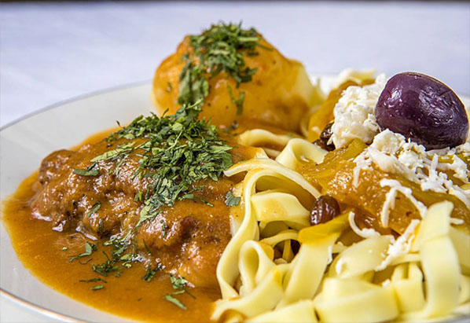

Ckocko de pollo
Ingredientes
- 1 pollo trozado
- 3 cucharadas de aceite
- 2 cebollas corte pluma
- 1 tomate picado
- 1 pimentón morrón
- 1 pimentón rojo
- 1 pimentón verde
- 1 locoto
- 2 dientes de ajo
- 1 taza de arvejas
- perejil picado
- sal y pimienta
- 2 vasos de chicha
- 1 copa de vino oporto
- 2 hojas de laurel
- 3 cucharadas de ají amarillo molido
- comino al gusto
- 6 papas cocidas
Preparación
Lavar y picar las verduras. En una olla freír el pollo en aceite, luego agregar la cebolla, el tomate, los pimentones, locoto, ajos, arvejas, el perejil y salpimentar. Incorporar la chicha, el vino, el laurel, ají amarillo y comino. Dejar cocinar hasta que el pollo esté suave. Servir el pollo con la salsa encima, acompañar con papas cocidas y chuño phuti con huevo si desea.